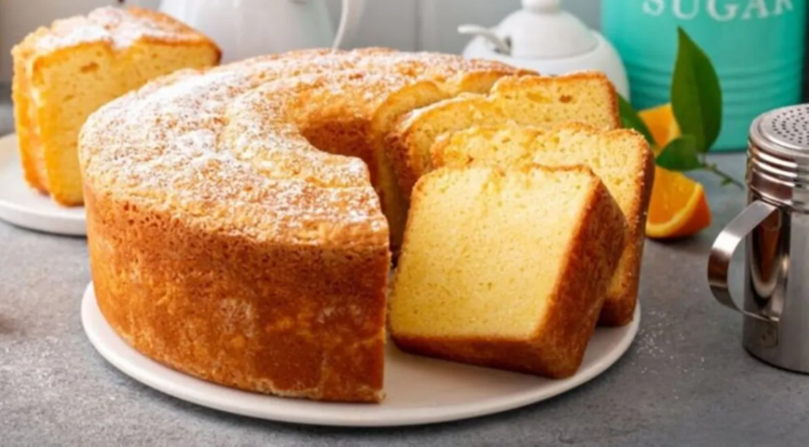

TORTA MATERA

Ingredientes
- 1 taza de harina 0000.
- 1 taza de harina integral.
- 1 cucharadita de polvo de hornear.
- ¾ taza de aceite neutro (de maíz o girasol).
- 1 taza de azúcar.
- Ralladura de limón.
- Leche c/n.
Modo de prepapación
- Antes de comenzar: precalentar el horno en 180°.
- En un recipiente colocar tres huevos junto con 1 taza de azúcar y batir por unos minutos hasta formar una crema blanca. Agregar ½ taza de aceite y continuar batiendo por unos minutos más.
- Comenzar a incorporar las harinas junto con el polvo de hornear y de a poco e integrarlo con la mezcla realizando movimientos suaves. Agregar la ralladura de limón y continuar incorporando la harina. En caso que quede seca agregar un poco de leche.
- Llevar la mezcla a un molde para horno previamente enmantecado y enharinado.
- Llevar al horno por 30 minutos.